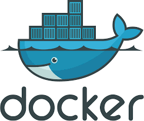

FROM openjdk:11.0.7-jdk-buster
ADD target\docker-test-0.0.1-SNAPSHOT.jar .
EXPOSE 8001
CMD java -jar docker-test-0.0.1-SNAPSHOT.jar
docker version
docker ps – pokazuje aktywne kontenery
docker images – pokazuje obrazy
docker build -f Dockerfile -t helios:v1 . - budowanie
docker run -p 8001:8090 41002caa873a– uruchamianie
Kroki potrzebne do zastosowania dockera w aplikacji:
1. Stwórz aplikacje
2. Stwórz plik Dockerfile w katalogu głownym
3. uruchom konsole w katalogu gdzie znajduje się plik Dockerfile
4. zbuduj obraz poleceniem : docker build -f Dockerfile -t helios:v1
5. Uruchom kontener poleceniem : docker run -p 8001:8090 numerObrazu – numer obrazu podejrzyj polecenim docker images.
6. Po zakończeniu ubij kontener: docker stop numerKontenera
To jest taka wirtualna maszyna na której uruchamiany jest program. Jeżeli na dockerze stworzymy kontener a w nim uruchomimy aplikacje a następnie przekazemy na inny komputer to aplikacja będzie się uruchamiać na dockerze.
Dockera można uruchamiać na każdym systemie operacyjnym.
W dockerze ważne są trzy elementy:
Dockerfile - plik opisujący co ma się wykonać w ramach kontenera.
Example:FROM openjdk:11.0.7-jdk-buster
ADD target\docker-test-0.0.1-SNAPSHOT.jar .
EXPOSE 8001
CMD java -jar docker-test-0.0.1-SNAPSHOT.jar
Image. – image jest tworzony z dockerfile, jest plikiem niemodyfikowalny, zawiera recepte jak budowac kontenery
Kontener – instancja image.
Docker-hub – repozyterium dockerowe zawieracjace obrazy.
Komendy : https://docs.docker.com/engine/reference/builder/#environment-replacement
docker infodocker version
docker ps – pokazuje aktywne kontenery
docker images – pokazuje obrazy
docker build -f Dockerfile -t helios:v1 . - budowanie
docker run -p 8001:8090 41002caa873a– uruchamianie
Kroki potrzebne do zastosowania dockera w aplikacji:
1. Stwórz aplikacje
2. Stwórz plik Dockerfile w katalogu głownym
3. uruchom konsole w katalogu gdzie znajduje się plik Dockerfile
4. zbuduj obraz poleceniem : docker build -f Dockerfile -t helios:v1
5. Uruchom kontener poleceniem : docker run -p 8001:8090 numerObrazu – numer obrazu podejrzyj polecenim docker images.
6. Po zakończeniu ubij kontener: docker stop numerKontenera